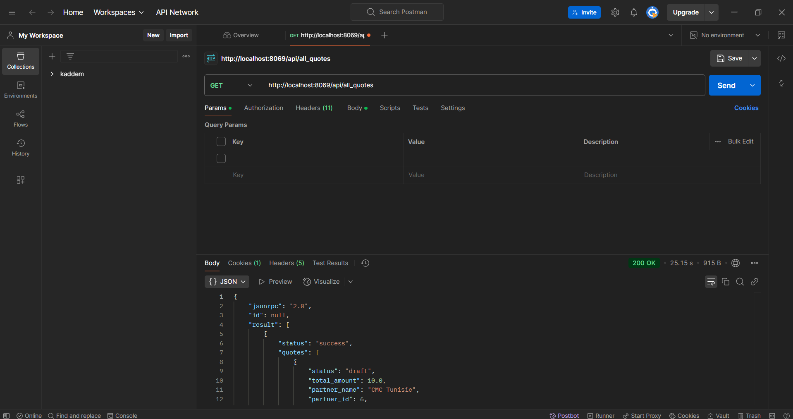
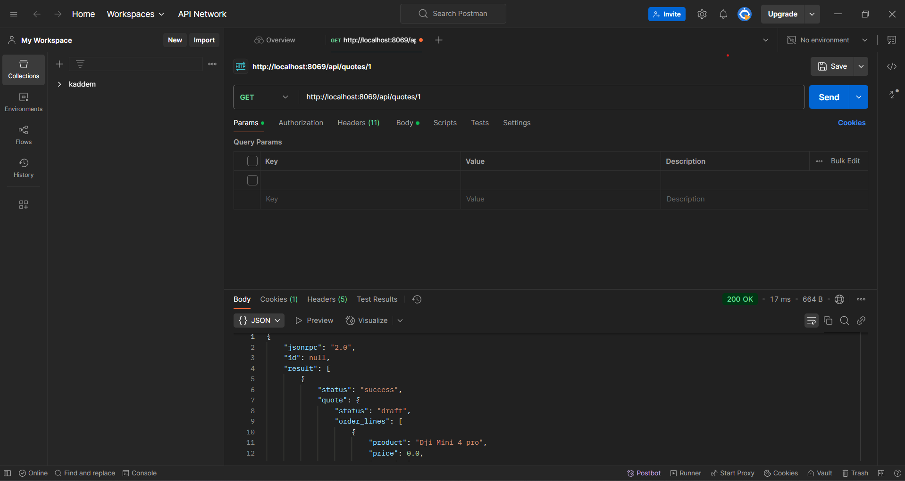
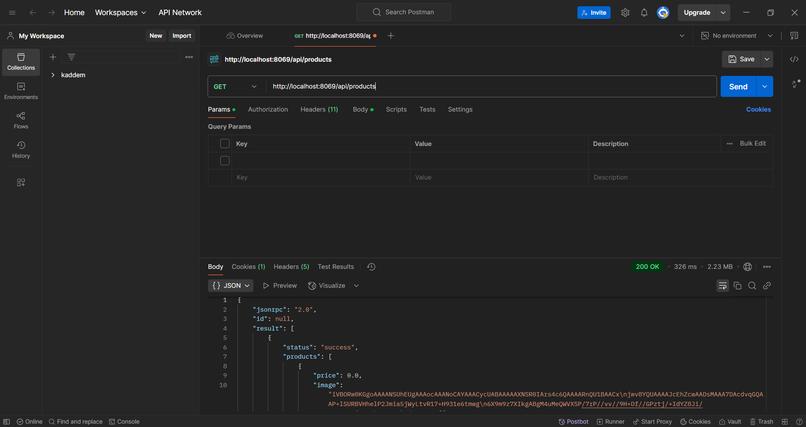

1. Introduction
Ce document présente la création et l'intégration d'un module Odoo permettant la synchronisation avec un site e-commerce PrestaShop. L'API développée facilite la gestion des produits et des devis entre les deux plateformes. Des tests de l'API ont été réalisés avec Flask et Postman.
2. Architecture et Fonctionnalités
2.1. Modules Odoo utilisés
Le module est basé sur les modules Odoo suivants :
Sale
Gestion des devis et commandes.
Product
Gestion des produits.
Stock
Gestion des stocks.
2.2. Fonctionnalités implémentées
- Récupération des produits : Endpoint permettant de lister tous les produits d'Odoo.
- Importation d'un devis avec son ID : Endpoint permettant l'Importation d'un devis basé sur son ID.
- Récupération des produits : Endpoint permettant de lister tous les devis depuis Odoo
- Synchronisation avec PrestaShop : Synchronisation automatique des produits et des devis.
3. Installation et Configuration
3.1. Installation du module Odoo
- Copier le module dans le répertoire
addonsd'Odoo. - Vérifier la présence des fichiers essentiels :
__init__.py__manifest__.pycontrollers.py
- Installer le module depuis l'interface Odoo ou via la ligne de commande :
odoo-bin -c /etc/odoo/odoo.conf -u odoo_api_integration
4. Endpoints API et Tests
4.1. Endpoints implémentés
Récupération des produits
Méthode : GET
URL : /api/products
Réponse attendue :
{
"status": "success",
"products": [
{
"price": 0.0,
"image":climatiseur1.jpg
"id": 7,
"reference": "111111111111",
"name": "tele"
}
]
}Importation d'un devis
Méthode : GET
URL : /api/quotes/id
Réponse attendues :
{
{
"product": "Dji Mini 4 pro",
"price": 0.0,
"quantity": 1.0
}
],
"partner_id": 6,
"id": 1,
"total_amount": 10.0
}
Importation de tous les devis
Méthode : GET
URL : /api/all_quotes
Réponse attendues :
Réponse attendue :
"status": "success",
"quotes": [
{
"status": "draft",
"total_amount": 10.0,
"partner_name": "CMC Tunisie",
"partner_id": 6,
"id": 2,
"order_lines": [
{
"price": 10.0,
"product": "testttttttttttttt",
"product_id": 8,
"quantity": 1.0
}
]
"status": "draft",
"total_amount": 0.0,
"partner_name": "CMC Tunisie",
"partner_id": 6,
"id": 1,
"order_lines": [
{
"price": 0.0,
"product": "Dji Mini 4 pro",
"product_id": 2,
"quantity": 1.0
}}
]
,
200,
4.2. Test avec Flask
Un serveur Flask a été utilisé pour simuler des requêtes HTTP vers l'API.
import requests
response = requests.get("http://localhost:8069/api/products")
4.3. Test avec Postman
Les requêtes ont été envoyées via Postman en mode POST et GET. Les résultats ont confirmé le bon fonctionnement des endpoints.
  5. Résultats et Analyse
- L'API permet une synchronisation fluide entre Odoo et PrestaShop.
- Les tests sous Flask et Postman ont validé le bon fonctionnement des endpoints.
- Une future amélioration pourrait inclure l'authentification OAuth2 pour sécuriser l'accès.
6. Conclusion
Le module Odoo développé offre une API fonctionnelle permettant la synchronisation des produits et devis avec PrestaShop.